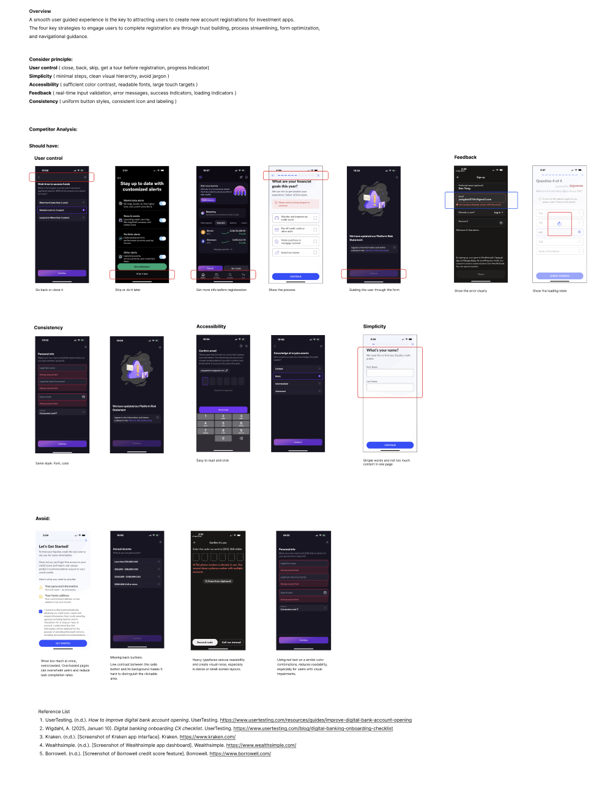

Crypta Sign-In
Core Competencies Applied
Secure UX Design
Balancing high-level security (2FA/Biometrics) with user convenience to minimize drop-off rates during the authentication phase.
Error & Validation Logic
Designing clear, non-punitive error messages and real-time form validation to guide users through complex security requirements.
Form Simplification
Optimizing input fields and micro-interactions to reduce cognitive load and prevent "form fatigue" during sensitive data entry.
Low-Fidelity Wireframing
Mapping out complex user flows and decision trees before high-fidelity execution to ensure logical consistency.
Visual Journey
